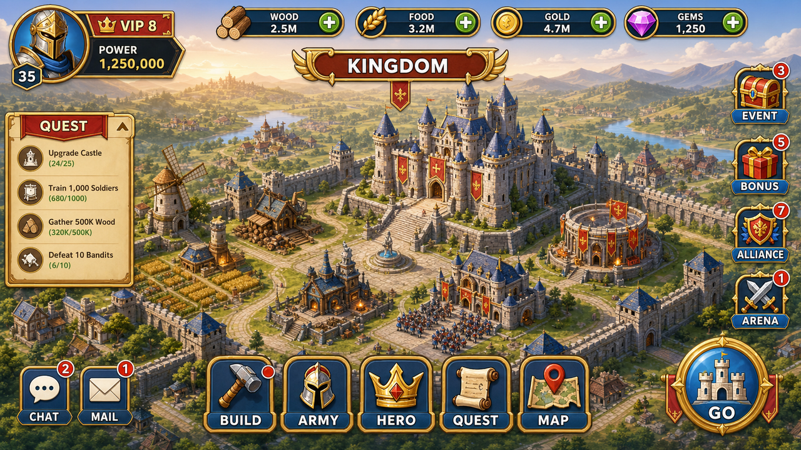
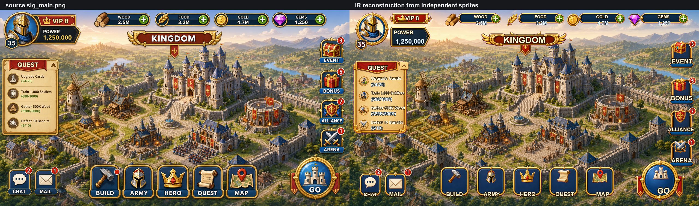
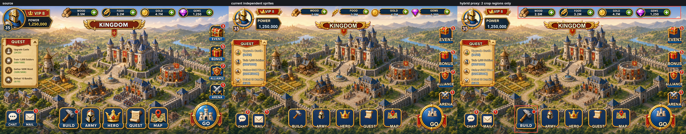
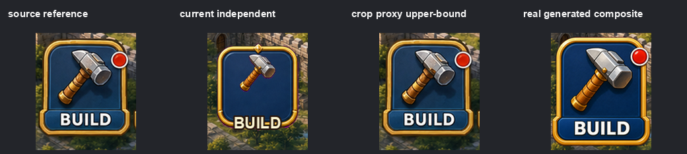
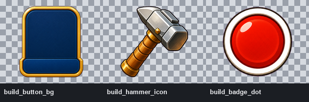
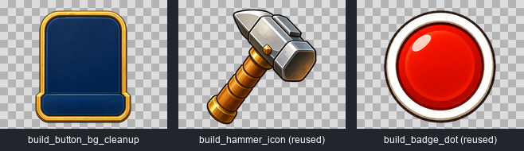
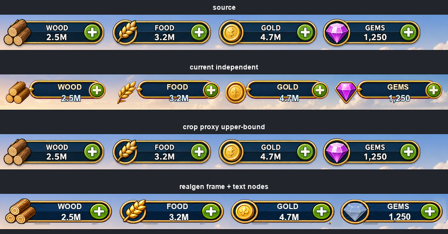
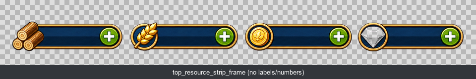
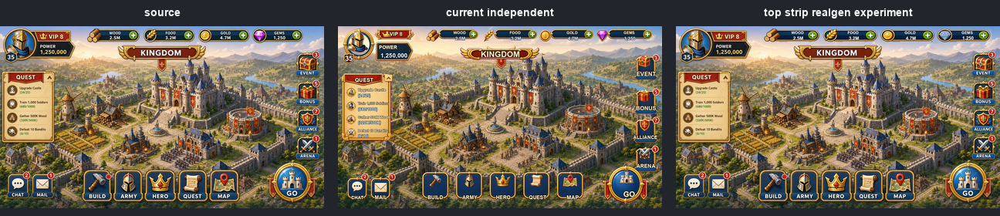

SLG 主界面 Sprite 还原方案验证报告
本报告整理最近围绕 slg_main 做的几轮验证：从最初的独立 sprite 重建差异，到 crop proxy 上限实验，再到 BUILD 按钮和顶部资源条的真实生成实验。
目标不是证明哪张图更好看，而是判断当前方案在“工程可用”和“接近原图视觉”之间的真实边界。
当前 AI 独立/组合 sprite 生成路线适合做 mock、原型和工程结构验证，不适合承诺源图级高保真还原。
源图是在全局上下文里一次性生成的；独立生成会丢失统一光源、材质、相邻关系和微小比例约束。
若要求接近原图，应考虑人工修图、PSD 化、受控分割补图或基于 style/material sheet 重新设计整套资产。
1. 前因后果
一开始的完整流程已经能把横屏 SLG 主界面拆成语义化资产：独立 PNG、Text Node、Layer IR、Layout IR、bbox overlay、sprite overview 和 reconstruction。 但是用户在对比图中指出：差异不是几个红框局部，而是整体材质、描边、比例、字体、光照、细节密度都有明显不一致。
因此后续问题从“能不能拆 sprite”转成了更具体的验证：如果不继续过度设计，只选少量代表组件，能不能找到一种低复杂度方案，让真实生成的独立 sprite 接近原始 AI 效果图？


2. 数据口径
本报告中的 delta 指 mean absolute RGB delta：把实验 crop 与 source crop 的 RGB 通道做平均绝对差。数值越低，越接近源图；0.00 表示像素完全一致。
0.00 不是可交付结果。它只是把源图局部矩形像素贴回去，用来测量“理论上限”。最终 sprite 不能直接用 crop proxy，因为它包含背景、文字、遮挡和其它 UI 上下文，不是干净可复用资产。
| 术语 | 含义 | 是否可作为最终 sprite |
|---|---|---|
current independent |
当前独立 sprite + Text Node 按 IR 回贴后的局部结果。 | 可作为工程流程结果 |
crop proxy |
直接从 source 裁出的局部像素，只用于测量上限。 | 不可作为最终 sprite |
whole realgen |
把整个组合控件重新生成成一张透明 sprite。 | 可测试，不推荐默认使用 |
decomposed realgen |
按工程边界拆成底板、icon、badge、Text Node 等。 | 工程边界更正确 |
cleanup / inpaint |
以源局部为参考，删除遮挡子元素并补全底板。 | 可测试，但不保证高保真 |
3. 总览数据
| 组件 | 实验方案 | 工程边界 | 相对 source 的 delta | 结果判断 |
|---|---|---|---|---|
| BUILD 按钮 | 当前独立 sprite | 底板、锤子、红点、文字分开 | 45.20 | 基线，有明显漂移 |
| BUILD 按钮 | crop proxy | 源图局部像素，不是 sprite | 0.00 | 理论上限 |
| BUILD 按钮 | whole realgen | 整按钮一张透明 sprite，含文字 | 53.61 | 比基线更差 |
| BUILD 按钮 | decomposed realgen + Text Node | button_bg + hammer_icon + badge_dot + Text Node | 45.64 | 工程边界正确，但视觉无收益 |
| BUILD 按钮 | cleanup bg + 复用 icon/Text | 只清理/补全按钮底板，文字仍为 Text Node | 47.56 | 生成干净，但按钮被标准化 |
| 顶部资源条 | 当前独立 sprite | 资源条底、icon、加号、Text Node 分开 | 57.61 | 基线，漂移更明显 |
| 顶部资源条 | realgen frame + Text Nodes | 四条资源栏组合 frame，文字仍为 Text Node | 53.92 | 小幅改善，但仍远离上限 |
| 顶部资源条 | realgen frame + Text Nodes，UI mask | 只看 UI 区域，降低天空背景影响 | 58.34 vs 基线 60.78 | UI 区域也只是小幅改善 |
| 顶部资源条 | realgen frame + Text Nodes，generated alpha mask | 只看生成 sprite 覆盖区域和 Text Node 附近 | 76.84 | 说明生成资产自身与源图 UI 细节差异仍然很大 |
关键 delta 对比
条形图按 60 delta 近似归一化，只用于辅助阅读；正式判断以上表数据为准。
4. 实验一：Crop Proxy 上限
第一步不是直接继续生图，而是先回答一个窄问题：如果把局部组件作为一个整体替换，理论上能不能显著缩小差距？
因此选了两个代表区域：顶部资源条 top_resource_strip 和底部 build_nav_button。


阶段结论
build_nav_button当前基线 delta 为 45.20，proxy 为 0.00。top_resource_strip当前基线 delta 为 57.61，proxy 为 0.00。- proxy 证明了“局部整体替换”有上限收益，但没有证明真实生成能达到这个上限。
5. 实验二：BUILD 按钮 whole realgen
接着测试最直接的想法：把整个 BUILD 按钮生成成一张透明组合 sprite。这个方案减少了多 layer 组装误差，但会把 BUILD 文字也烘焙进图片，工程可编辑性较弱。

结果
| 方案 | delta | 观察 |
|---|---|---|
| current independent | 45.20 | 按钮结构可运行，但和源图差距明显。 |
| whole realgen | 53.61 | 比基线更差，说明整按钮生成并没有接近 proxy 上限。 |
原因不是“没有生成出来”，而是模型把按钮变成了更标准、更厚重、更高清的大按钮。它在审美上合理，但不是源图中的那个小按钮。
6. 实验三：BUILD 按钮拆分生成
用户指出 whole button 作为一张整图验证意义有限，于是改成更工程化的边界：
button_bg + hammer_icon + badge_dot + Text Node。这样文字可编辑，背景、icon、badge 也能作为独立 sprite 使用。


结果
- current independent：45.20
- whole realgen：53.61
- decomposed realgen + Text Node：45.64
这次证明了一个重要边界：拆分边界可以改善工程可编辑性，但不能自动提高视觉相似度。只要底板、锤子、红点本身的生成风格漂移，最终组合仍然会漂。
7. 实验四：BUILD 按钮 cleanup / inpaint
下一步验证“从源局部图清理/补全”是否比从零生成更接近源图。目标只做按钮底板：
删除锤子、红点、BUILD 文字和背景，补全被遮挡区域，再复用上一轮 icon 和 Text Node 回贴。


结果
| 方案 | delta | 判断 |
|---|---|---|
| decomposed realgen + Text Node | 45.64 | 上一轮拆分方案。 |
| cleanup bg + 复用 icon/Text | 47.56 | 没有改善，反而略差。 |
原因在于被锤子、红点和文字遮挡的底板像素并不存在于扁平图中。模型只能按自己的 UI 先验去补图，于是补成了更规整、更厚、更高清的标准按钮，而不是恢复源图的真实底板。
8. 实验五：顶部资源条组合 frame
为了避免只在按钮类组件上得出结论，又换成了不同类型组件：顶部资源条。
本轮没有把文字和数字烘焙进 sprite，而是生成 top_resource_strip_frame：四个固定资源 icon、四条资源栏底板、四个绿色加号，标签和数值继续由 Text Node 回贴。



结果
| 方案 | 全 crop delta | UI mask delta | 观察 |
|---|---|---|---|
| current independent | 57.61 | 60.78 | 细拆资源条漂移明显。 |
| realgen frame + Text Nodes | 53.92 | 58.34 | 小幅改善，但没有接近 proxy 上限。 |
另有 generated alpha mask delta：76.84。该指标只看生成 frame 覆盖区域和 Text Node 附近，说明真正的生成资产细节与源图差异仍然很大。
这次不是完全负结果：宽组合控件比细拆版本稍微接近一点。 但问题仍然明显：模型把多槽位控件重新排版为更规整的 HUD 组，资源条更长、更均匀；宝石从紫色偏成银蓝色，gold icon 也变成更标准的圆章。
9. 原因分析
源图是一次性在全局画面中生成的。模型同时看到天空、城堡、按钮、资源条和整体光照，所以局部元素共享同一套材质和视觉上下文。
逐个生成 sprite 时，上下文被切碎。每次生成都会重新解释比例、边缘、高光、磨损、icon 形状和细节密度。
扁平图中被遮挡的像素无法真实恢复。inpaint 是按模型先验补图，不是还原原始图层。
组合能减少组装误差，但模型仍会重排 spacing、重画 icon、改变材质。宽 HUD 组件尤其容易被“重新设计”。
10. 当前方案边界
可以做到
- 锁定布局位置、尺寸、层级和 Text Node。
- 生成透明、语义命名、可审计的独立 PNG。
- 区分
assets_png源素材与assets_fit_raw布局实例。 - 把动态文字、数值、按钮文案保留为可编辑 Text Node。
- 输出 Sprite Plan、manifest、IR、bbox overlay、overview 和 comparison。
- 为 mock、原型、二次美术参考提供结构化资产。
确定做不好
- 不能保证重新生成 sprite 与源图像素级一致。
- 不能稳定复刻源图的精确材质、描边、颗粒、高光和阴影。
- 不能从单张扁平图中恢复被文字或 icon 遮挡的真实底板。
- 不能同时最大化“细粒度复用”和“整屏几乎等同源图”。
- 不能靠 prompt 稳定锁住 icon identity、slot spacing 和小尺寸 UI 字重。
11. 汇报建议
建议对外结论
这条流程已经证明了工程化拆解能力：可以从一张 AI UI 效果图建立 Sprite Plan、Layer IR、Layout IR、Text Node 和可回贴验证的透明素材。 但如果目标是“和原始效果图几乎一样”，当前纯 AI 重新生成 sprite 的方案不够可靠。
建议后续路线
| 目标 | 推荐路线 | 原因 |
|---|---|---|
| 做产品原型 / mock / 流程验证 | 继续当前 Sprite Plan + IR + 独立 sprite 生成流程 | 结构清晰、可复盘、可迭代，成本低。 |
| 做接近源图的高保真还原 | 人工修图、PSD 化、受控分割 + 手工补遮挡 | 需要确定性图层和人工判断，不能只靠重新生成。 |
| 做一整套正式 UI 资产 | 基于 style/material sheet 重新设计资产族 | 不要以单张扁平图为唯一真值，而是让美术统一重制。 |
| 局部快速替换 | 只对非关键、低身份要求的区域使用组合 sprite | 资源条实验显示组合有小幅收益，但 icon identity 和 spacing 仍会漂。 |
12. 附：关键产物路径
examples/output/slg_main_fidelity_experiment/：crop proxy 上限实验。examples/output/slg_main_build_nav_button_realgen/：BUILD 整按钮真实生成实验。examples/output/slg_main_build_nav_button_decomposed/：BUILD 拆分真实生成实验。examples/output/slg_main_build_button_bg_cleanup/：BUILD 底板 cleanup / inpaint 实验。examples/output/slg_main_top_resource_strip_realgen/：顶部资源条组合 frame 实验。examples/output/slg_main_fidelity_report/：本 HTML 汇报文件与截图资产。